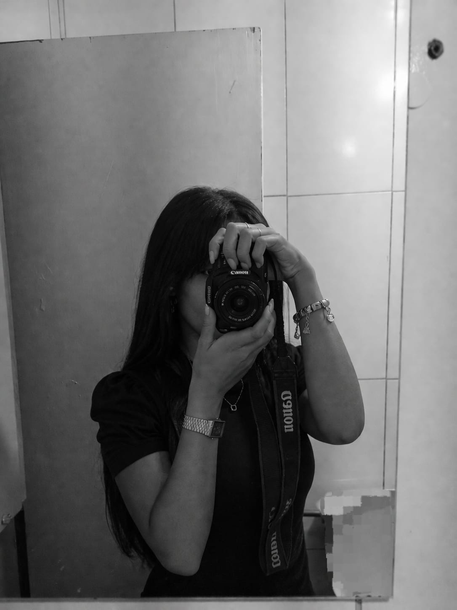

Portfólio de fotografia
Ketlyn Maria
Fotógrafa em Taquaritinga, SP
Retratos, paisagens, carros e detalhes registrados com um olhar sensível para momentos que merecem permanecer.
Muito prazer
Um olhar atento aos detalhes, pessoas e histórias.
Meu nome é Ketlyn e sou fotógrafa. Tenho 18 anos e fotografo há 4 anos. Ganhei minha primeira câmera aos 15 anos e, desde então, me apaixonei ainda mais pela fotografia e pelo universo das câmeras.
Através das minhas fotos, gosto de capturar detalhes, momentos e estilos que expressam minha visão do mundo.
Eu capturo detalhes que quase ninguém percebe, e também aquilo que uma imagem consegue guardar em silêncio: sentimentos, momentos e histórias.
Galeria
Trabalhos selecionados do portfólio.
Contato
Vamos eternizar um pouco da sua história?
Se você deseja guardar momentos, sentimentos ou algo que tem significado para você, entre em contato comigo.